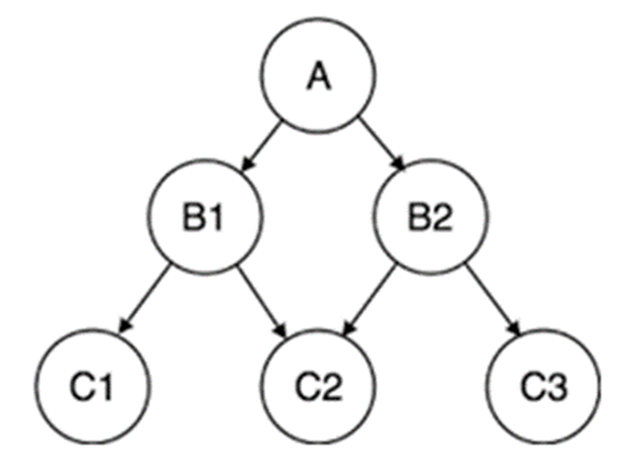

Hierarchical Database
The schema for hierarchical databases is defined by its tree-like organization, in which there is typically a root “parent” directory of data stored as records that links to various other subdirectory branches, and each subdirectory branch, or child record, may link to various other subdirectory branches.
The hierarchical database structure dictates that, while a parent record can have several child records, each child record can only have one parent record. Data within records is stored in the form of fields, and each field can only contain one value. Retrieving hierarchical data from a hierarchical database architecture requires traversing the entire tree, starting at the root node.
Let's see one example:
Let's assume that we have a main directory which contains other subdirectories. Each subdirectory contains more files and directories. Each directory or file can be in one directory only i.e. it has only one parent.

Here A is the main directory i.e. the root node. B1 and B2 are their child or subdirectories. B1 and B2 also have two children C1, C2 and C2, C3 respectively. They may be directories or other files. This depicts one-to-many relationships.
Advantages
Disadvantages